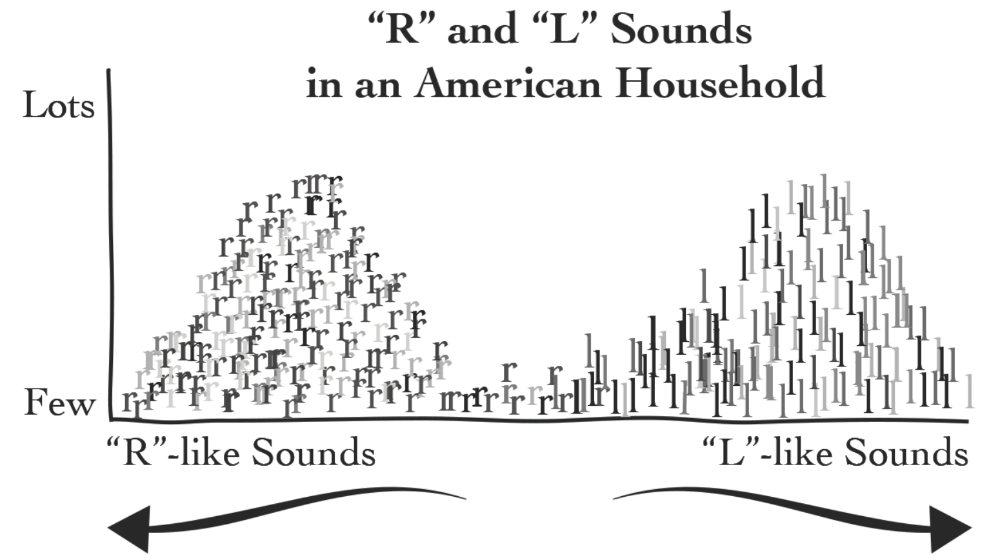
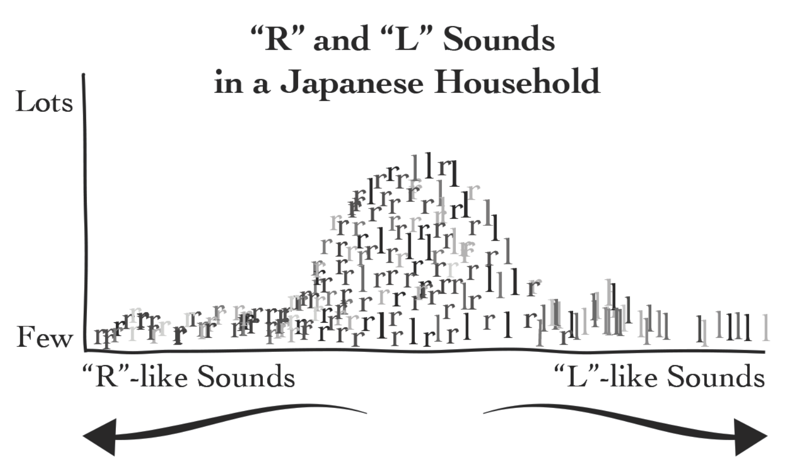

我明明是福建人，为什么别人以为我是胡建人？
在和不同地区的人聊天时，我们常常会有疑惑：为什么有些人说话时分不清 x 和 y？这里的 x 和 y 可能是拼音中的 f 和 h，l 和 n，l 和 r，z 和 zh，ang 和 an。比如，我明明是福建人，为什么别人以为我是胡建人？在最近刚刚读完的一本书《Fluent Forever》中，有两张图片正好能解释这个问题。
每个人从婴儿时期开始就被动地浸泡在母语环境中。成长的每一天，周围的每个人，甚至他们在电子设备上播放的各种音视频，都会向孩子输入大量的母语声音。有些声音反复出现，有些声音偶尔出现，还有些声音从不出现。比如：出现最多的大概会是孩子的名字，也是孩子最先熟悉的声音；从不出现的可能是另一门语言的声音，比如中国小孩不会听到大舌音。一种声音出现的频次越高，越容易被小孩分辨出来，而越容易被分辨出来的声音，就越容易在之后说话时被发出。
以下就是《Fluent Forever》第三章中的一张图：

在美国家庭的语言环境中，会听到许许多多以 r 开头的词语，比如 read、run、row、red 和 raw，以及 l 开头的词语，比如 like、love、life、lack、language 和 learn。这两类词语中的 r 和 l 听起来很不一样。如果我们把美国家庭中日常出现的所有声音按照发音与 r 和 l 的相近程度，排布在上图的坐标中，就会看到一个双峰结构，y 轴对应的值越大，出现的频次越高。因为听得多、用得多，在这样的环境中长大的人就能越清晰地分辨两组发音的区别。
相比之下，在日本家庭中长大的人听到的声音放在同样的坐标图中，就是一个单峰的结构，如下图所示：

在日语中，「り」是很常见的假名之一，它的发音介于 r 和 l 之间，比如日语里的「谢谢」(发音大概是"阿利噶抖")，你可以访问链接，点击喇叭按钮听听看，是否能听出它与 r、l 的区别。如果你的母语环境没有类似的结构，那么从声音中分辨 り、r 和 l 应该是一个不小的挑战。
现在回到咱们开篇的问题，是不是豁然开朗了？一些福建人 (我自己就是) 分不清 l 和 r，比如「肉」听起来像「漏」；一些四川人分不清 l 和 n，比如「来」听起来像「乃」。看完这幅图，应该不难画出他们语言环境对应的坐标图。